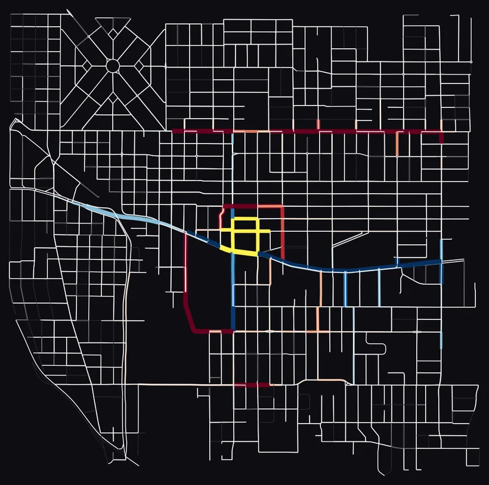

=^.^= darcy
ACM SIGSPATIAL 2026 · Student Research Competition
Darcy Van Pelt
Undergraduate SRC · Riverside, California · Nov 3–6, 2026
Source-Based Interaction Modeling Captures Traffic Pollution Redistribution That Static Estimation Cannot
Darcy Van Pelt, Colorado State University Global. Advised by Dr. Christof Teuscher, Portland State University.
Accepted · DOI pending 2-page abstract (PDF) ↗Links
- LinkedIn connect
- Email darcy0408@gmail.com
- Code on GitHub the model's code
- I-5 Rose Quarter preregistered predictions, travel-time log
- Proceedings chapter PDXScholar, pp. 317–337
- ORCID 0009-0002-7750-4277
- Full portfolio research, projects, skills

The question
When a street closes, where does the traffic pollution go? In the model, each car follows the car ahead, queues at signals, and picks a new route when a street closes. Close a section of SE Powell and the traffic reroutes, and the estimated NO2 emissions go with it: the closed arterial drops 61–76% on average across three arterials and 12 repeat runs, while the parallel streets rise. A static land-use model cannot show this: its inputs don't change when a road closes.
References
- Van Pelt, D. (2026). Source-Based Interaction Modeling Captures Traffic Pollution Redistribution That Static Estimation Cannot. ACM SIGSPATIAL 2026 Student Research Competition, to appear.
- Van Pelt, D., Anderson, N., & Teuscher, C. (2026). When Roads Close, Pollution Moves: Agent-Based Modeling of Street-Level NO2 and Noise Redistribution in Portland. In Summer Proceedings 2026, Portland State University NSF REU, ISBN 9798160005515, pp. 317–337. PDXScholar
- Rao, M., George, L. A., Shandas, V., & Rosenstiel, T. N. (2017). Assessing the Potential of Land Use Modification to Mitigate Ambient NO2 and Its Consequences for Respiratory Health. Int. J. Environ. Res. Public Health, 14(7), 750. The static land-use baseline. DOI
Supported by the National Science Foundation under grant no. 2244551, through the REU "Computational Modeling Serving Portland" at Portland State University, Teuscher Lab. Chapter co-authors: Niklas Anderson and Christof Teuscher.